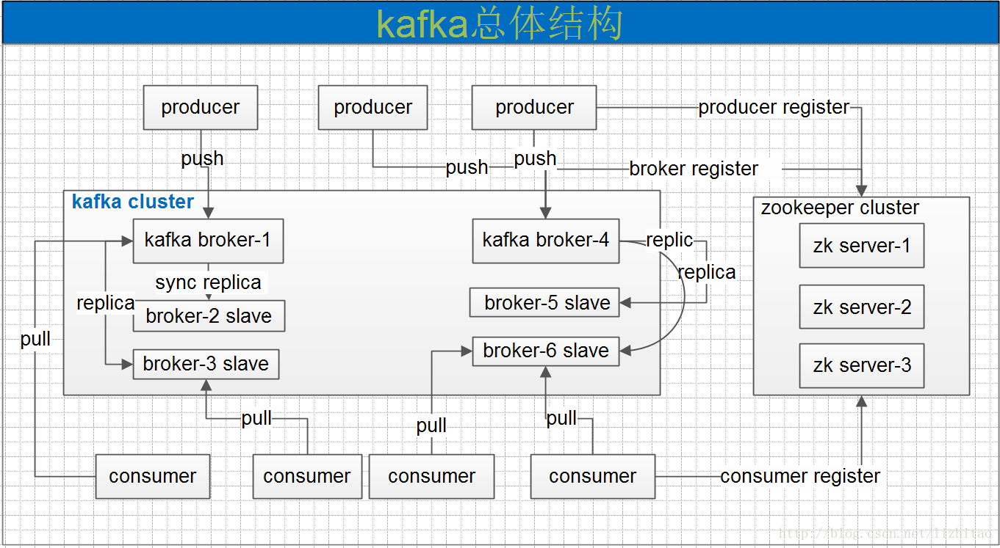
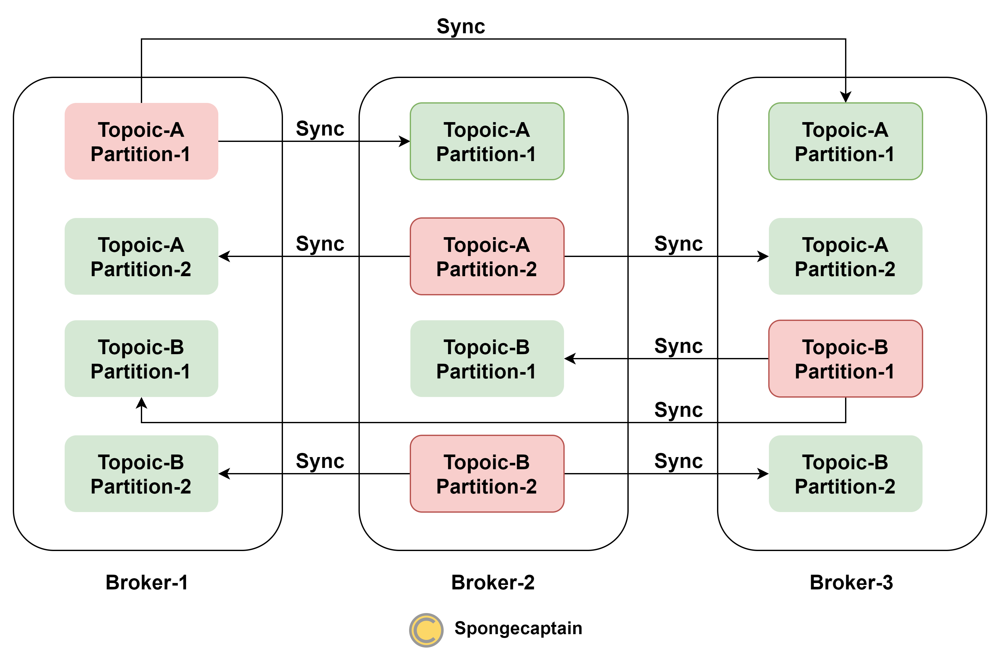

Kafka 的总体框架
文章目录

Kafka 总体框架如上图所示，但是为了更好地理解，我们可以把 Kafka 中的各个组件按照逻辑以及物理进行划分，如下：
- 逻辑上的概念：
- Producer：消息生产者，就是向 Kafka broker 发消息的客户端；
- Topic：一个 Kafka 集群可以有多个 Topic，Topic 用于为消息提供逻辑分类（只需指定消息的 topic 即可生产或消费数据，而不必关心数据物理上存于何处）；
- Consumer：消息消费者，向 Kafka broker 取消息的客户端。每个 consumer 属于一个特定的 consumer group（可为每个 consumer 指定 group name，若不指定 group name，则属于默认的 group）；
- Consumer Group（CG）：多个 Consumer 组成一个 Consumer Group，CG 是订阅 topic 的基本单位（Consumer 没有订阅能力）。一个 topic 可以有多个 CG。topic 的消息会复制（不是真的复制，是概念上的）到所有的 CG，但每个 CG 只会把消息发给该 CG 中的一个 consumer。如果需要实现广播，只要每个 consumer 有一个独立的 CG 就可以了。要实现单播只要所有的 consumer 在同一个 CG。
- 物理上的概念：
- Broker：一台 Kafka 物理服务器就是一个 broker。一个集群由多个 broker 组成。一个 broker 可以容纳多个 topic。
- Partition：为了实现 Topic 的负载均衡，逻辑上的一个 Topic 可以分为物理上多个 partitions，不同的 partition 分别存储于不同的 broker 上。
- Replica：Kafka 中 Partition 是复制冗余的基本单位，但 Kafka 中的复制机制仅仅用于分布式系统中的分区容错（这里的分区与上述 Partition 语义不同），而不用于负载均衡，replicas 中只有 leader 支持与客户端（包括 Consumer 以及 Producer）的读写操作。
为了更好说明 partition 与 replica 的不同，我们可以用下图来简单表示一个可能的 Kafka 集群：

一共有三个物理机，分别被称为 Broker-1、Broker-2 以及 Broker-3。
一共有两个主题 Topic-A 以及 Topic-B。
一个主题分为两个分区 Partition1 以及 Partition2，两个分区的数据内容各不相同。每一个分区进行了 3 个规模的复制冗余。上图中，每行有三个节点，属于同一个复制集。其中红色节点为 Leader 节点，绿色节点为 Follower 节点。只有 Leader 节点可以与客户端（包括 Consumer 以及 Producer）进行读写操作。
读到这里，读者朋友们也许发现了 Kafka 与其他分布式系统的不同之处：其他分布式系统中的 follower 节点虽然不支持写操作，但是支持读操作，目的是为了支持更高并发的读操作。可是，Kafka 这样做不就降低了集群的并发读性能了吗？
如果我们能抓住集群并发读性能的决定要素，那么就能理解 Kafka 如此设计的原因了。
首先，Kakfa 分布式集群的设计比 ZooKeeper 等分布式集群更复杂。ZooKeeper 的 Master 物理服务器上存储了集群中最完整的所有数据，但是 Kafka 的任意一台物理服务器通常仅仅存储了集群的部分数据。
其次，无论你如何设计，分布式集群的读性能最大值取决于物理机的个数，而不是 replica 的个数。Kakfa 认为，即使并发读同一个 topic 上的消息，也会因为消息分布于不同的 partition 上，不同的 partition 又分布于不同的 broker 上（物理服务器）上，并发读也能均匀地打在不同的物理机上。虽然确实可以将 replicas 设置为支持并发读（即 follower partition 也支持读操作），但是又要加一层负载均衡，大大增加了系统的复杂性，但是好处是什么呢？并发对同一个消息的读吗？是的，事实上，并没有可以利用此优化的场景，因此 Kafka 并没有这么做。
总之，Kafka 的设计目标是：为同一个 topic 的所有消息们进行负载均衡，负载均衡的物理实现是一个 topic 分为物理机上的多个 partition。replicas 仅仅用于分区容错，而不用于负载均衡（或者说增加并发读写能力）。